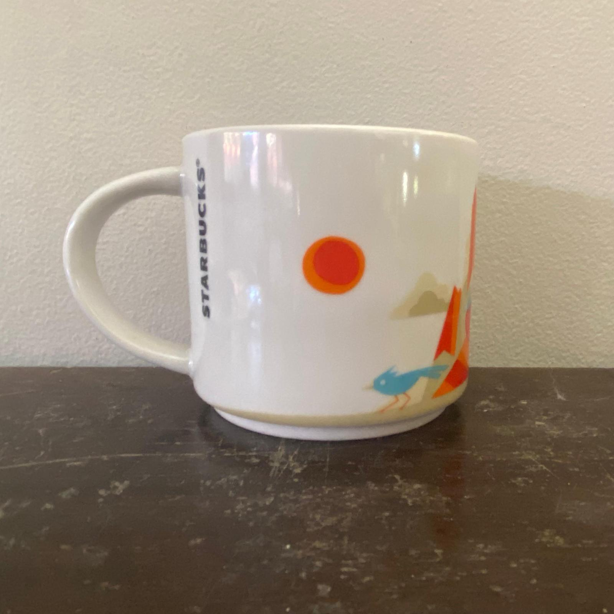
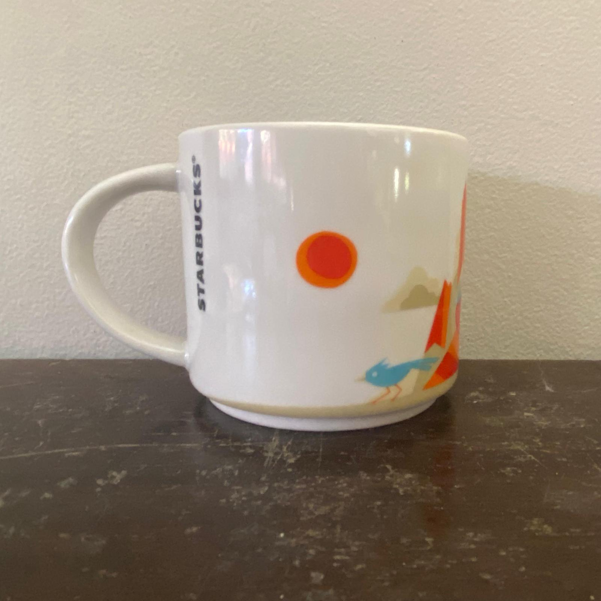
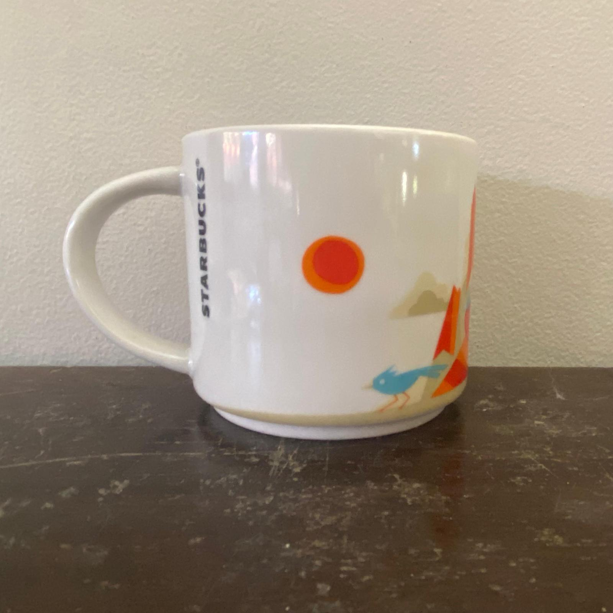
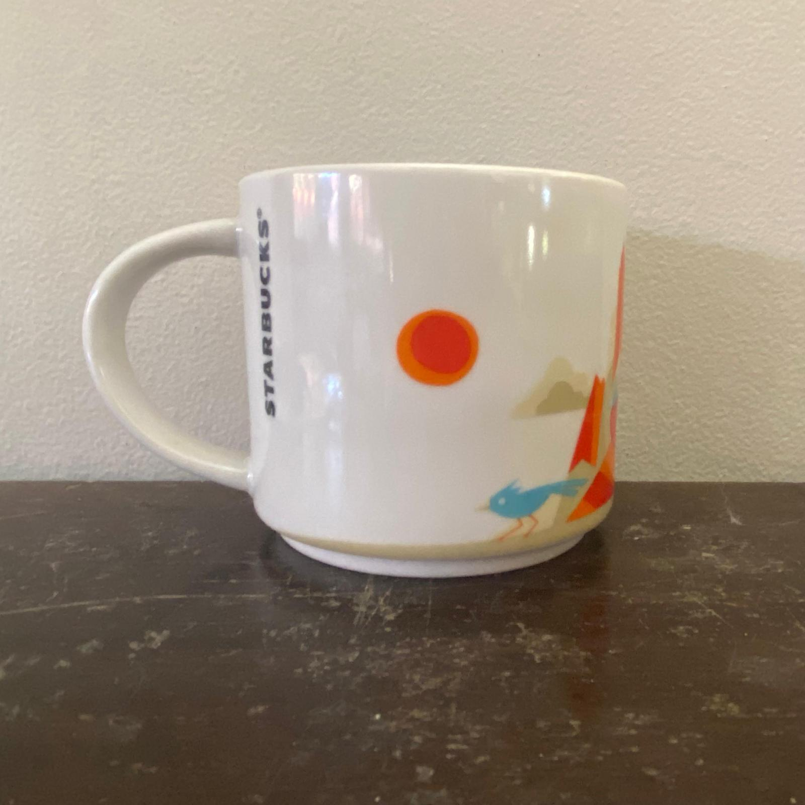
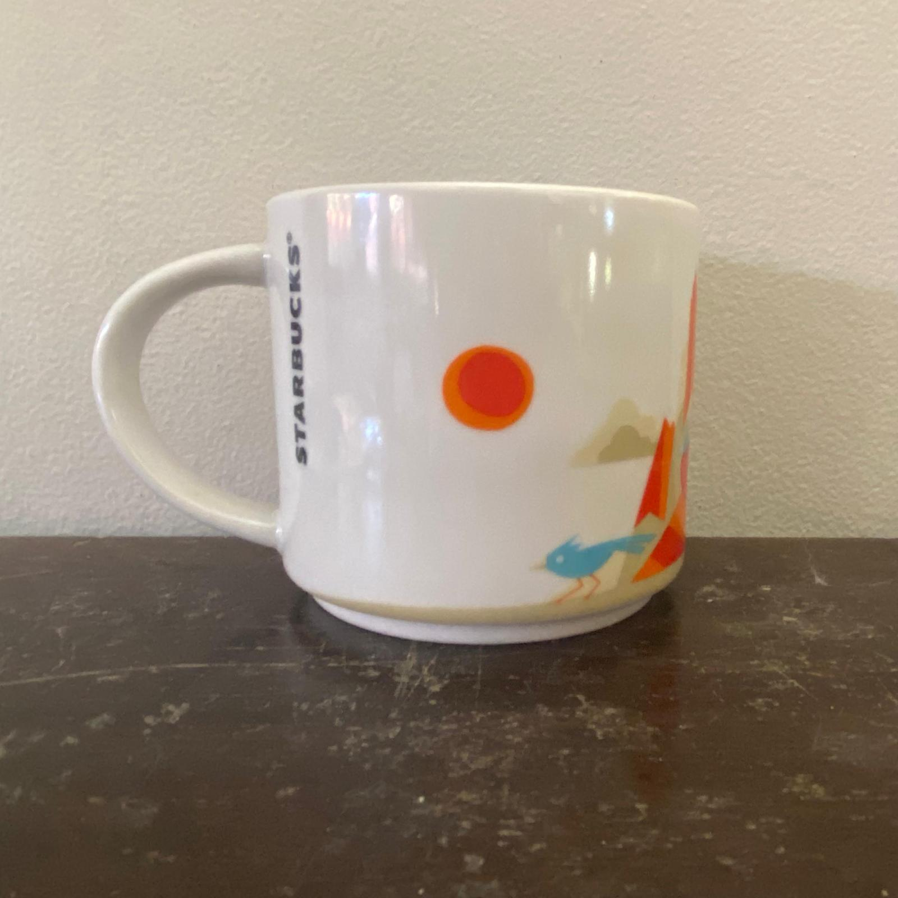
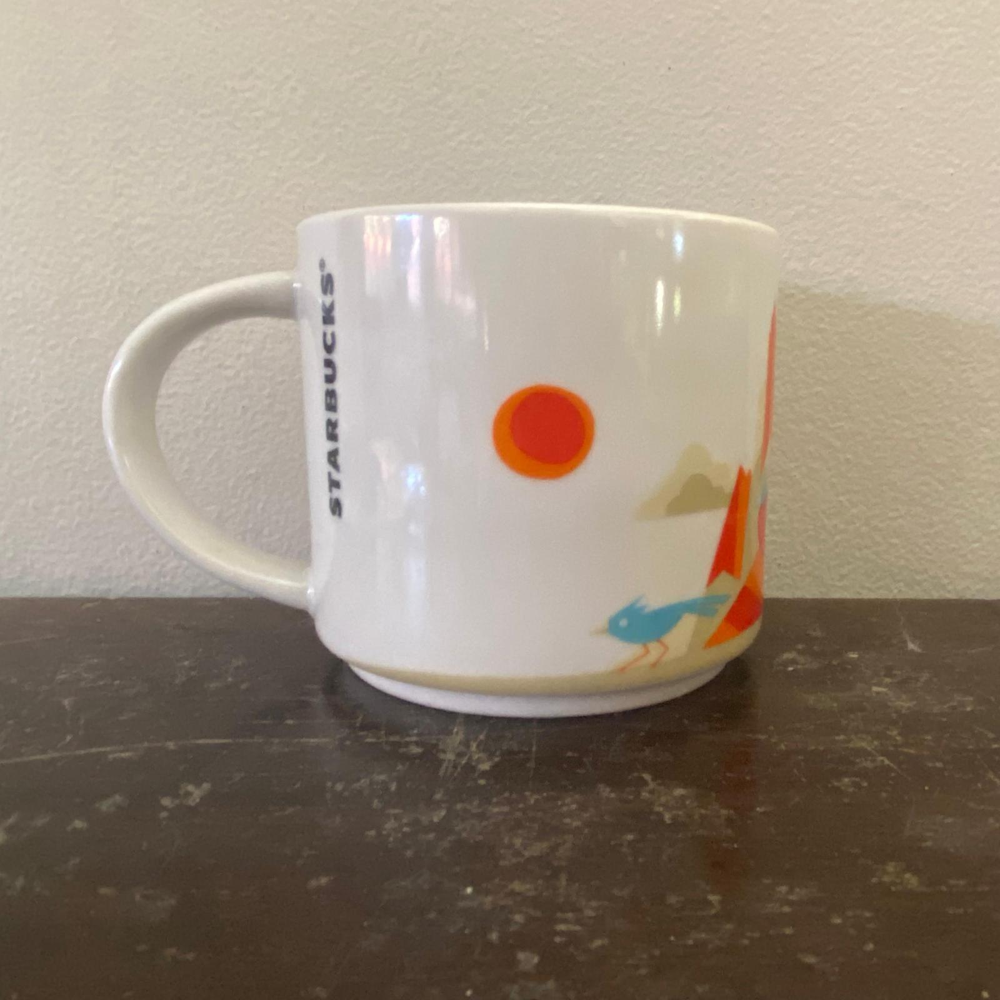

A short white mug with a pueblo landscape wrapping around the sides. The design is made in orange, blue, and tan, depicting a pueblo with hot air balloons flying overhead. A bright orange sun floats over a blue roadrunner next to the building. The inside of the mug is blue.